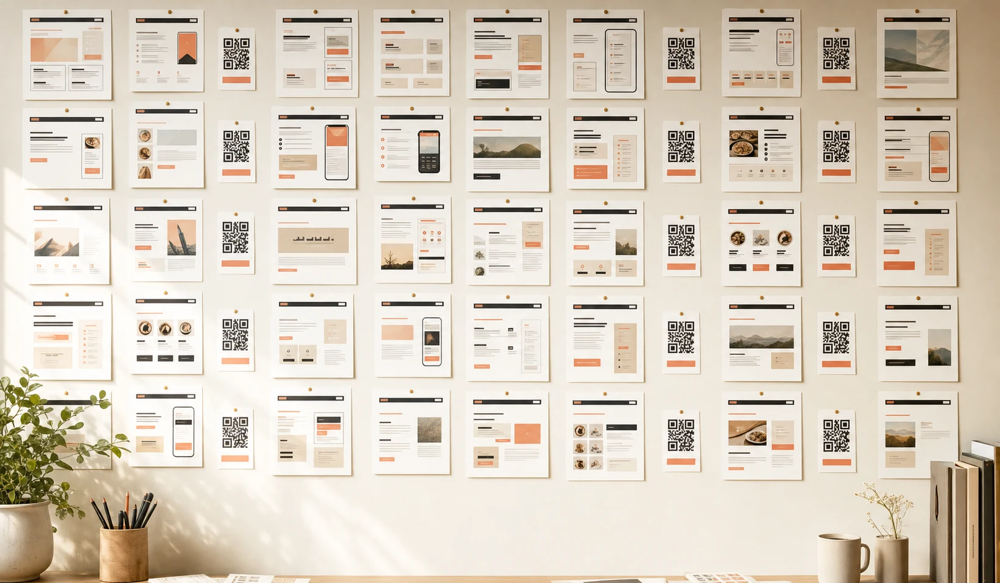
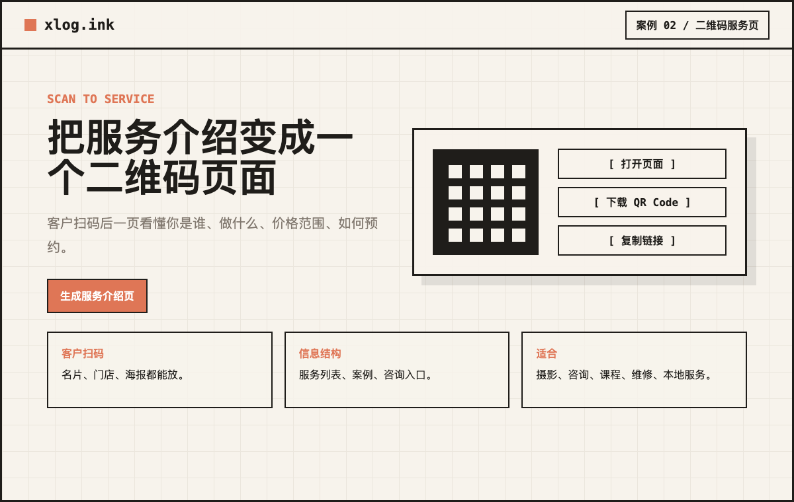
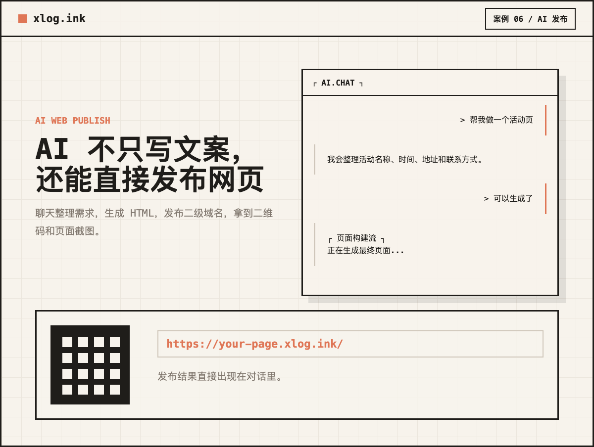
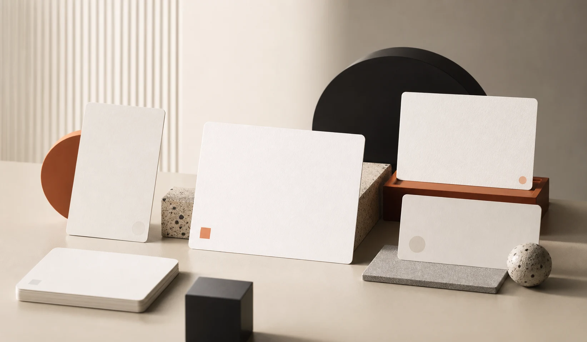
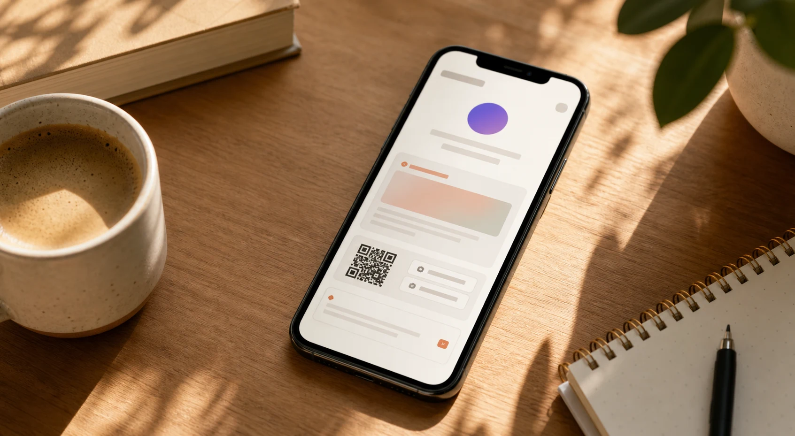

PROMO LANDING SET
十个能直接用于传播的 xlog.ink 宣传页面
每页都对应一个真实使用场景，配套 HTML mockup、AI 氛围图、二维码交付示意和 SEO 关键词。

案例 01 / 小店活动
一句话生成咖啡店周五福利页
把“呆会咖啡每周五免费喝冰美式”变成可扫码打开的活动网页，包含福利、城市、参与方式和门店氛围。

案例 02 / 二维码服务页
把服务介绍变成一个二维码页面
客户扫码后一页看懂你是谁、做什么、价格范围和如何预约。
案例 03 / 活动通知
活动通知别只发群消息
读书会、沙龙、课程、聚会、展览，都可以整理成一个反复转发的页面。
案例 04 / 个人介绍
30 秒生成一个个人介绍页
把简介、联系方式、作品入口整理成一个轻量主页，用于社群介绍、简历补充和名片二维码。
案例 05 / 小店宣传
给小店做宣传页，不用设计师
服务项目、门店图片、地址和预约方式一次整理，适合本地店铺和个人工作室。

案例 06 / AI 发布
AI 不只写文案，还能直接发布网页
聊天整理需求，生成 HTML，发布二级域名，拿到二维码和页面截图。
案例 07 / 活动链接
一个链接讲清楚你的活动
活动介绍、嘉宾、流程、地址和联系方式，变成一个能反复转发的链接。

案例 08 / Logo 品牌页
上传一张 Logo，生成完整品牌页面
让品牌视觉进入页面，而不是只生成文字。适合品牌介绍、服务展示和项目启动页。

案例 09 / 朋友圈宣传
朋友圈里放不下的内容，放进一个网页
课程、服务、活动、小店介绍，都可以配链接和二维码，让社交传播更完整。
案例 10 / 场景总览
名片、活动、文章、宣传页，都从聊天开始
不知道做哪种页面也没关系，直接告诉 AI 你的目的，它会帮你整理页面结构。